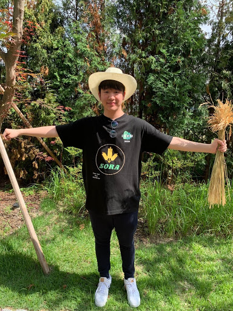
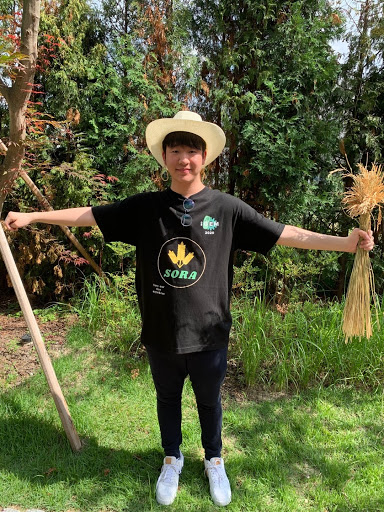

TEAM
About Us
SIS_Korea is a high school iGEM team from Seoul International School. Having come together to provide a solution for the crop losses during storage in South Asian countries, our team consists of unique individuals who are all passionate about solving this problem. Through our combined efforts, our team was able to come out with a successful end result that shows the progress we made as a team.


Taejoo Lee
Taejoo has contributed mainly by serving as the co-leader for human practices and economy along with partaking major roles in interviews and collaboration. He took part in the high school education program and contacted many professors and organizations along with being in charge of the campaign process and survey analysis. He also used his expertise in economics to make the sensor more economical and feasible for the low-income farmers.

Hanjoo Lee
Hanjoo has contributed mainly to human practices where he passionately helped the co-leaders in the campaign process and the high school education program along with taking roles in collaboration by contacting multiple experts in the field of biosensor. Furthermore, Aiden led the logo and poster design process.
Ian Kim
Ian has contributed in different categories of the project, doing a little bit of everything. He worked on coming up with questions to ask during interviews, and wrote how our project would affect the Sri Lankan farmers for a part of the proposed implementation. He was also in charge of contacting the team’s mentor and asked her for advice whenever the team was unsure how to approach a certain criteria.
Sarah Yim
As the team co-leader of the biology sector, Sarah has mainly contributed to the scientific components of the project, cooperating in the construction of the overall biological design and participating in interviews to discuss the biological aspects of the topic. She has also taken considerable part in the human practices as she implements applied mathematics to create graphs and analyze data collected from research. She has developed ideas for campaigns, the high school education program, interviews, and survey analysis.
Clara Yim
As one of the team leaders, Clara completed most of the administrative tasks, such as registering the team with the school and meeting the iGEM competition requirements. She was also a part of the biology team, engaging in the design and coding processes to create the most appropriate biosensor model. As a part of the Human Practices team as well, she organized meet-ups with other Korean teams and international organizations such as the Dream Space Academy, a pivotal organization that helped the team get in touch with the local community in Sri Lanka.
 

Brian (Jeongwoo) Cho
Brian (Jeongwoo Cho), given his position as multi media and video leader, has contributed through methods such as taking photos and recording videos of various meetings that our group had attended. Furthermore, he has been assigned to create two videos, one describing the fundamental concept of the topic addressed by our group (promotion video) and another outlining the numerous tasks we have completed throughout the process of developing our project. Finally, he organizes all the resources he has collected in order to create the wiki.
Jinha
Jinha as one of the team leaders took responsibility for administrative tasks along with collaboration with other teams in Korea, notably KUAS. Furthermore, as part of the biology team, Jinha took responsibility for the coding process for creating the biosensor model as well as the wiki. Also taking a major role in the proposed implementation, he actively researched possible, realistic applications of the biosensor model around the world, contacting with various key figures and organizations for the end goal of providing a cheap yet effective way of detecting contaminated wheat. Overall, he has enjoyed actively participating in the team!
Collaborations
Other iGEM Teams
KUAS
KUAS is a collegiate iGEM team in Korea run by college students of Korea University. With each member ranging in interest and skill, some of them being biotechnology, life science, design, and nursing, KUAS has been successful in its endeavors throughout its years of participation in the iGEM competition. Developing their know-how over the years, KUAS has been kind enough to assist other high school teams in Korea by sharing their experiences and taking part in partnerships, one of such teams being ours, SIS_Korea.
Korea-HS
Draft...
Meet Up
KUAS
In late June, our iGEM team met with the KUAS team, seeking guidance and their know-how on the igem competition. In particular, by asking questions on specific criterias for the medals in IGEM, we were able to choose which criterias would be appropriate to focus on considering our topic: human practices and engineering success. Furthermore, the KUAS team was kind enough to challenge and criticize our idea of using an e coli and a biosensor to detect contaminated wheat, raising the major concern of whether our purpose of detection would be actually applicable to saving wheat. Through an interactive session, discussing freely on their project and our project, both teams were able to make immense progress and conclusively, we decided to take part in a partnership through which we will continue to find other areas of collaboration.
Korea-HS
Draft...
Attribution
Draft...